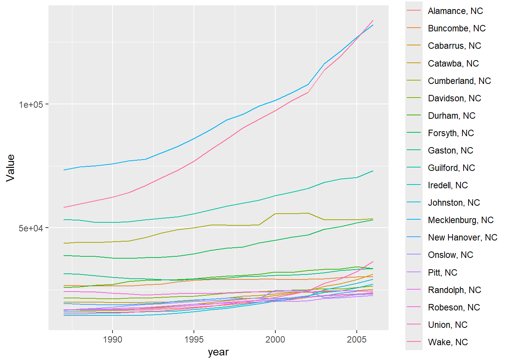

The files to be read contain information from the Census Bureau in csv format. The aim is to create generic functions that can process and plot files in specific tabular format. Firstly, data processing steps will be applied to File 1.
Data Processing
Isolated Data Processing Steps
The first step requires retuning specific columns from full set. This is made easier using the tidyverse packages. Loading the tidyverse packages using require() .
require(tidyverse)
Loading required package: tidyverse
── Attaching core tidyverse packages ──────────────────────── tidyverse 2.0.0 ──
✔ dplyr 1.1.3 ✔ readr 2.1.5
✔ forcats 1.0.0 ✔ stringr 1.5.1
✔ ggplot2 3.5.0 ✔ tibble 3.2.1
✔ lubridate 1.9.3 ✔ tidyr 1.3.0
✔ purrr 1.0.2
── Conflicts ────────────────────────────────────────── tidyverse_conflicts() ──
✖ dplyr::filter() masks stats::filter()
✖ dplyr::lag() masks stats::lag()
ℹ Use the conflicted package (<http://conflicted.r-lib.org/>) to force all conflicts to become errors
Rows: 3198 Columns: 42
── Column specification ────────────────────────────────────────────────────────
Delimiter: ","
chr (22): Area_name, STCOU, EDU010187N1, EDU010187N2, EDU010188N1, EDU010188...
dbl (20): EDU010187F, EDU010187D, EDU010188F, EDU010188D, EDU010189F, EDU010...
ℹ Use `spec()` to retrieve the full column specification for this data.
ℹ Specify the column types or set `show_col_types = FALSE` to quiet this message.
Selecting the required columns with select() from dplyr. Selecting the columns Area_name, STCOU and columns ending with “D” (using ends_with()). Renaming Area_name to area_name with mutate() .
# A tibble: 31,980 × 4
area_name STCOU Enrollment Value
<chr> <chr> <chr> <dbl>
1 UNITED STATES 00000 EDU010187D 40024299
2 UNITED STATES 00000 EDU010188D 39967624
3 UNITED STATES 00000 EDU010189D 40317775
4 UNITED STATES 00000 EDU010190D 40737600
5 UNITED STATES 00000 EDU010191D 41385442
6 UNITED STATES 00000 EDU010192D 42088151
7 UNITED STATES 00000 EDU010193D 42724710
8 UNITED STATES 00000 EDU010194D 43369917
9 UNITED STATES 00000 EDU010195D 43993459
10 UNITED STATES 00000 EDU010196D 44715737
# ℹ 31,970 more rows
Based on the schema, the enrollment column is formatted to extract a substring consisting of the 8th and 9th characters, representing the year. This substring extraction is vectorized using substr() within mutate(). Next, depending on whether the extracted year value is greater than 24, “200” or “19” is prefixed to the string using if_else(). Finally, the result is coerced to a numeric format using as.numeric().
# A tibble: 31,980 × 5
area_name STCOU Enrollment Value year
<chr> <chr> <chr> <dbl> <dbl>
1 UNITED STATES 00000 EDU010187D 40024299 1987
2 UNITED STATES 00000 EDU010188D 39967624 1988
3 UNITED STATES 00000 EDU010189D 40317775 1989
4 UNITED STATES 00000 EDU010190D 40737600 1990
5 UNITED STATES 00000 EDU010191D 41385442 1991
6 UNITED STATES 00000 EDU010192D 42088151 1992
7 UNITED STATES 00000 EDU010193D 42724710 1993
8 UNITED STATES 00000 EDU010194D 43369917 1994
9 UNITED STATES 00000 EDU010195D 43993459 1995
10 UNITED STATES 00000 EDU010196D 44715737 1996
# ℹ 31,970 more rows
Selecting rows in file_1_formatted where the area_name column contains a pattern matching “, \w\w”, and storing the result to f1_county.
# A tibble: 31,450 × 5
area_name STCOU Enrollment Value year
<chr> <chr> <chr> <dbl> <dbl>
1 Autauga, AL 01001 EDU010187D 6829 1987
2 Autauga, AL 01001 EDU010188D 6900 1988
3 Autauga, AL 01001 EDU010189D 6920 1989
4 Autauga, AL 01001 EDU010190D 6847 1990
5 Autauga, AL 01001 EDU010191D 7008 1991
6 Autauga, AL 01001 EDU010192D 7137 1992
7 Autauga, AL 01001 EDU010193D 7152 1993
8 Autauga, AL 01001 EDU010194D 7381 1994
9 Autauga, AL 01001 EDU010195D 7568 1995
10 Autauga, AL 01001 EDU010196D 7834 1996
# ℹ 31,440 more rows
Selecting rows in file_1_formatted where the area_name column does not contain a pattern matching “, \w\w”, and storing the result to f1_county. This was performed by setting the invert argument to be TRUE .
# A tibble: 530 × 5
area_name STCOU Enrollment Value year
<chr> <chr> <chr> <dbl> <dbl>
1 UNITED STATES 00000 EDU010187D 40024299 1987
2 UNITED STATES 00000 EDU010188D 39967624 1988
3 UNITED STATES 00000 EDU010189D 40317775 1989
4 UNITED STATES 00000 EDU010190D 40737600 1990
5 UNITED STATES 00000 EDU010191D 41385442 1991
6 UNITED STATES 00000 EDU010192D 42088151 1992
7 UNITED STATES 00000 EDU010193D 42724710 1993
8 UNITED STATES 00000 EDU010194D 43369917 1994
9 UNITED STATES 00000 EDU010195D 43993459 1995
10 UNITED STATES 00000 EDU010196D 44715737 1996
# ℹ 520 more rows
Assigning the class county to f1_county and class state to f1_not_county. This will be used for making class specific functions later.
Determining the state for the county data set by extracting the last to characters from the area_name observations using substr() . The character index (required for start= and stop= argument) in the character string is determined using nchar() .
# A tibble: 31,450 × 6
area_name STCOU Enrollment Value year state
<chr> <chr> <chr> <dbl> <dbl> <chr>
1 Autauga, AL 01001 EDU010187D 6829 1987 AL
2 Autauga, AL 01001 EDU010188D 6900 1988 AL
3 Autauga, AL 01001 EDU010189D 6920 1989 AL
4 Autauga, AL 01001 EDU010190D 6847 1990 AL
5 Autauga, AL 01001 EDU010191D 7008 1991 AL
6 Autauga, AL 01001 EDU010192D 7137 1992 AL
7 Autauga, AL 01001 EDU010193D 7152 1993 AL
8 Autauga, AL 01001 EDU010194D 7381 1994 AL
9 Autauga, AL 01001 EDU010195D 7568 1995 AL
10 Autauga, AL 01001 EDU010196D 7834 1996 AL
# ℹ 31,440 more rows
Creating a function division that maps the state to the corresponding Division defined by the Census Bureau. The function is created based on multiple if/else if logical statements using case_when() . Then vectorizing the function by applying it within sapply() in the chain. This results in a new column, where the division is assisgned based on the state in the area_name column.
# Defining the division functiondivision <-function(state) {case_when( state %in%c("CONNECTICUT", "MAINE", "MASSACHUSETTS", "NEW HAMPSHIRE", "RHODE ISLAND", "VERMONT") ~"Division 1", state %in%c("DELAWARE", "MARYLAND", "NEW JERSEY", "NEW YORK", "PENNSYLVANIA") ~"Division 2", state %in%c("ILLINOIS", "INDIANA", "MICHIGAN", "OHIO", "WISCONSIN") ~"Division 3", state %in%c("IOWA", "KANSAS", "MINNESOTA", "MISSOURI", "NEBRASKA", "NORTH DAKOTA", "SOUTH DAKOTA") ~"Division 4", state %in%c("FLORIDA", "GEORGIA", "NORTH CAROLINA", "SOUTH CAROLINA", "VIRGINIA", "WEST VIRGINIA") ~"Division 5", state %in%c("ALABAMA", "KENTUCKY", "MISSISSIPPI", "TENNESSEE") ~"Division 6", state %in%c("ARKANSAS", "LOUISIANA", "OKLAHOMA", "TEXAS") ~"Division 7", state %in%c("ARIZONA", "COLORADO", "IDAHO", "MONTANA", "NEVADA", "NEW MEXICO", "UTAH", "WYOMING") ~"Division 8", state %in%c("ALASKA", "CALIFORNIA", "HAWAII", "OREGON", "WASHINGTON") ~"Division 9",TRUE~"ERROR"# Default case if area_name doesn't match any category )}# Vectorizing the function to apply to a column of statesf1_not_county <- f1_not_county |>mutate(division =sapply(area_name, division))f1_not_county
# A tibble: 530 × 6
area_name STCOU Enrollment Value year division
<chr> <chr> <chr> <dbl> <dbl> <chr>
1 UNITED STATES 00000 EDU010187D 40024299 1987 ERROR
2 UNITED STATES 00000 EDU010188D 39967624 1988 ERROR
3 UNITED STATES 00000 EDU010189D 40317775 1989 ERROR
4 UNITED STATES 00000 EDU010190D 40737600 1990 ERROR
5 UNITED STATES 00000 EDU010191D 41385442 1991 ERROR
6 UNITED STATES 00000 EDU010192D 42088151 1992 ERROR
7 UNITED STATES 00000 EDU010193D 42724710 1993 ERROR
8 UNITED STATES 00000 EDU010194D 43369917 1994 ERROR
9 UNITED STATES 00000 EDU010195D 43993459 1995 ERROR
10 UNITED STATES 00000 EDU010196D 44715737 1996 ERROR
# ℹ 520 more rows
Developing Functions for Data Processing
In this step, we are creating functions, that perform the same data processing steps as above on a new dataset with similar schema. Firstly, reading file_2 from the url provided.
Rows: 3198 Columns: 42
── Column specification ────────────────────────────────────────────────────────
Delimiter: ","
chr (22): Area_name, STCOU, EDU010197N1, EDU010197N2, EDU010198N1, EDU010198...
dbl (20): EDU010197F, EDU010197D, EDU010198F, EDU010198D, EDU010199F, EDU010...
ℹ Use `spec()` to retrieve the full column specification for this data.
ℹ Specify the column types or set `show_col_types = FALSE` to quiet this message.
Creating a function function_for_step_1_2 to perform step 1 and 2 as above. Here columns are selected based on a pattern defined by value_column_pattern. The selected file is then transformed into a long format (file_long) using pivot_longer(), mapping columns to “Enrollment” and their corresponding values to “Value”. The resultant data frame (file_long) is returned by the function. This will be the input for next function.
# A tibble: 31,980 × 4
area_name STCOU Enrollment Value
<chr> <chr> <chr> <dbl>
1 UNITED STATES 00000 EDU010197D 44534459
2 UNITED STATES 00000 EDU010198D 46245814
3 UNITED STATES 00000 EDU010199D 46368903
4 UNITED STATES 00000 EDU010200D 46818690
5 UNITED STATES 00000 EDU010201D 47127066
6 UNITED STATES 00000 EDU010202D 47606570
7 UNITED STATES 00000 EDU015203D 48506317
8 UNITED STATES 00000 EDU015204D 48693287
9 UNITED STATES 00000 EDU015205D 48978555
10 UNITED STATES 00000 EDU015206D 49140702
# ℹ 31,970 more rows
The function function_for_step_3 is currently transforming data by adding a year column derived from the Enrollment column. First, it converts Enrollment to a character type and extracts the year portion using substr(). Then, it conditions the year values: if greater than 24, it prefixes “19” to form a four-digit year; otherwise, it prefixes “200” to make it a four-digit year. Finally, it converts year back to numeric type. The formatted data frame (file_formatted) is returned by the function. After applying function_for_step_3 to result1, the dataset is stored in formatted_result .
# A tibble: 31,980 × 5
area_name STCOU Enrollment Value year
<chr> <chr> <chr> <dbl> <dbl>
1 UNITED STATES 00000 EDU010197D 44534459 1997
2 UNITED STATES 00000 EDU010198D 46245814 1998
3 UNITED STATES 00000 EDU010199D 46368903 1999
4 UNITED STATES 00000 EDU010200D 46818690 2000
5 UNITED STATES 00000 EDU010201D 47127066 2001
6 UNITED STATES 00000 EDU010202D 47606570 2002
7 UNITED STATES 00000 EDU015203D 48506317 2003
8 UNITED STATES 00000 EDU015204D 48693287 2004
9 UNITED STATES 00000 EDU015205D 48978555 2005
10 UNITED STATES 00000 EDU015206D 49140702 2006
# ℹ 31,970 more rows
The function extract_state_from_area_name can process class county data to derive a new state column. It achieves this by extracting a substring from the area_name column, specifically starting from two characters before the end (nchar(area_name) - 1) to the end (nchar(area_name)). Returns a new data frame which has the newly added state column .
assign_divisions is a vectorized function which can assign the division to the class state data based on area_name.
# Defines the main function to apply the division function to a data frameassign_divisions <-function(indf) { outdf <- indf %>%mutate(division =sapply(area_name, division))return(outdf)}
The function function_for_steps4_5_6 can be used to perform steps 4 5 and 6.:
It filters data into two separate data frames using the pattern “, \w\w” :
f_county: Contains rows where area_name matches the pattern “, \w\w”.
f_not_county: Contains rows where area_name does not match the pattern.
Custom classes are assigned to each filtered data frame:
f_county is assigned the class “county”.
f_not_county is assigned the class “state”.
It then applies previously created functions for steps 5 and 6 to apply transforms separately :
f_county_with_state is derived by applying extract_state_from_area_name() to f_county.
f_not_county_with_divisions is derived by applying assign_divisions() to f_not_county.
Finally, the function returns a list containing f_county_with_state and f_not_county_with_divisions.
function_for_steps4_5_6 <-function(indata) { f_county <- indata[grep(pattern =", \\w\\w", indata$area_name, invert =FALSE),] f_not_county <- indata[grep(pattern =", \\w\\w", indata$area_name, invert =TRUE),]# Assign custom classesclass(f_county) <-c("county", class(f_county))class(f_not_county) <-c("state", class(f_not_county))# Check the splitsprint("f_county:")print(head(f_county))print("f_not_county:")print(head(f_not_county))#use built in functions for steps 5 and 6 f_county_with_state <-extract_state_from_area_name(f_county) f_not_county_with_divisions <-assign_divisions(f_not_county)return(list(f_county = f_county_with_state, f_not_county = f_not_county_with_divisions))}
Combining all functions together into a wrapper function on both csv files
my_wrapper <-function(url, col_pattern){ result <-read_csv(url) |>function_for_step_1_2(value_column_pattern = col_pattern) |>function_for_step_3() |>function_for_steps4_5_6()#return final resultreturn(result)}#run wrapper#csv bres1 <-my_wrapper("https://www4.stat.ncsu.edu/~online/datasets/EDU01b.csv", col_pattern ="D")
Rows: 3198 Columns: 42
── Column specification ────────────────────────────────────────────────────────
Delimiter: ","
chr (22): Area_name, STCOU, EDU010197N1, EDU010197N2, EDU010198N1, EDU010198...
dbl (20): EDU010197F, EDU010197D, EDU010198F, EDU010198D, EDU010199F, EDU010...
ℹ Use `spec()` to retrieve the full column specification for this data.
ℹ Specify the column types or set `show_col_types = FALSE` to quiet this message.
[1] "f_county:"
# A tibble: 6 × 5
area_name STCOU Enrollment Value year
<chr> <chr> <chr> <dbl> <dbl>
1 Autauga, AL 01001 EDU010197D 8099 1997
2 Autauga, AL 01001 EDU010198D 8211 1998
3 Autauga, AL 01001 EDU010199D 8489 1999
4 Autauga, AL 01001 EDU010200D 8912 2000
5 Autauga, AL 01001 EDU010201D 8626 2001
6 Autauga, AL 01001 EDU010202D 8762 2002
[1] "f_not_county:"
# A tibble: 6 × 5
area_name STCOU Enrollment Value year
<chr> <chr> <chr> <dbl> <dbl>
1 UNITED STATES 00000 EDU010197D 44534459 1997
2 UNITED STATES 00000 EDU010198D 46245814 1998
3 UNITED STATES 00000 EDU010199D 46368903 1999
4 UNITED STATES 00000 EDU010200D 46818690 2000
5 UNITED STATES 00000 EDU010201D 47127066 2001
6 UNITED STATES 00000 EDU010202D 47606570 2002
res1
$f_county
# A tibble: 31,450 × 6
area_name STCOU Enrollment Value year state
<chr> <chr> <chr> <dbl> <dbl> <chr>
1 Autauga, AL 01001 EDU010197D 8099 1997 AL
2 Autauga, AL 01001 EDU010198D 8211 1998 AL
3 Autauga, AL 01001 EDU010199D 8489 1999 AL
4 Autauga, AL 01001 EDU010200D 8912 2000 AL
5 Autauga, AL 01001 EDU010201D 8626 2001 AL
6 Autauga, AL 01001 EDU010202D 8762 2002 AL
7 Autauga, AL 01001 EDU015203D 9105 2003 AL
8 Autauga, AL 01001 EDU015204D 9200 2004 AL
9 Autauga, AL 01001 EDU015205D 9559 2005 AL
10 Autauga, AL 01001 EDU015206D 9652 2006 AL
# ℹ 31,440 more rows
$f_not_county
# A tibble: 530 × 6
area_name STCOU Enrollment Value year division
<chr> <chr> <chr> <dbl> <dbl> <chr>
1 UNITED STATES 00000 EDU010197D 44534459 1997 ERROR
2 UNITED STATES 00000 EDU010198D 46245814 1998 ERROR
3 UNITED STATES 00000 EDU010199D 46368903 1999 ERROR
4 UNITED STATES 00000 EDU010200D 46818690 2000 ERROR
5 UNITED STATES 00000 EDU010201D 47127066 2001 ERROR
6 UNITED STATES 00000 EDU010202D 47606570 2002 ERROR
7 UNITED STATES 00000 EDU015203D 48506317 2003 ERROR
8 UNITED STATES 00000 EDU015204D 48693287 2004 ERROR
9 UNITED STATES 00000 EDU015205D 48978555 2005 ERROR
10 UNITED STATES 00000 EDU015206D 49140702 2006 ERROR
# ℹ 520 more rows
Rows: 3198 Columns: 42
── Column specification ────────────────────────────────────────────────────────
Delimiter: ","
chr (22): Area_name, STCOU, EDU010187N1, EDU010187N2, EDU010188N1, EDU010188...
dbl (20): EDU010187F, EDU010187D, EDU010188F, EDU010188D, EDU010189F, EDU010...
ℹ Use `spec()` to retrieve the full column specification for this data.
ℹ Specify the column types or set `show_col_types = FALSE` to quiet this message.
[1] "f_county:"
# A tibble: 6 × 5
area_name STCOU Enrollment Value year
<chr> <chr> <chr> <dbl> <dbl>
1 Autauga, AL 01001 EDU010187D 6829 1987
2 Autauga, AL 01001 EDU010188D 6900 1988
3 Autauga, AL 01001 EDU010189D 6920 1989
4 Autauga, AL 01001 EDU010190D 6847 1990
5 Autauga, AL 01001 EDU010191D 7008 1991
6 Autauga, AL 01001 EDU010192D 7137 1992
[1] "f_not_county:"
# A tibble: 6 × 5
area_name STCOU Enrollment Value year
<chr> <chr> <chr> <dbl> <dbl>
1 UNITED STATES 00000 EDU010187D 40024299 1987
2 UNITED STATES 00000 EDU010188D 39967624 1988
3 UNITED STATES 00000 EDU010189D 40317775 1989
4 UNITED STATES 00000 EDU010190D 40737600 1990
5 UNITED STATES 00000 EDU010191D 41385442 1991
6 UNITED STATES 00000 EDU010192D 42088151 1992
res2
$f_county
# A tibble: 31,450 × 6
area_name STCOU Enrollment Value year state
<chr> <chr> <chr> <dbl> <dbl> <chr>
1 Autauga, AL 01001 EDU010187D 6829 1987 AL
2 Autauga, AL 01001 EDU010188D 6900 1988 AL
3 Autauga, AL 01001 EDU010189D 6920 1989 AL
4 Autauga, AL 01001 EDU010190D 6847 1990 AL
5 Autauga, AL 01001 EDU010191D 7008 1991 AL
6 Autauga, AL 01001 EDU010192D 7137 1992 AL
7 Autauga, AL 01001 EDU010193D 7152 1993 AL
8 Autauga, AL 01001 EDU010194D 7381 1994 AL
9 Autauga, AL 01001 EDU010195D 7568 1995 AL
10 Autauga, AL 01001 EDU010196D 7834 1996 AL
# ℹ 31,440 more rows
$f_not_county
# A tibble: 530 × 6
area_name STCOU Enrollment Value year division
<chr> <chr> <chr> <dbl> <dbl> <chr>
1 UNITED STATES 00000 EDU010187D 40024299 1987 ERROR
2 UNITED STATES 00000 EDU010188D 39967624 1988 ERROR
3 UNITED STATES 00000 EDU010189D 40317775 1989 ERROR
4 UNITED STATES 00000 EDU010190D 40737600 1990 ERROR
5 UNITED STATES 00000 EDU010191D 41385442 1991 ERROR
6 UNITED STATES 00000 EDU010192D 42088151 1992 ERROR
7 UNITED STATES 00000 EDU010193D 42724710 1993 ERROR
8 UNITED STATES 00000 EDU010194D 43369917 1994 ERROR
9 UNITED STATES 00000 EDU010195D 43993459 1995 ERROR
10 UNITED STATES 00000 EDU010196D 44715737 1996 ERROR
# ℹ 520 more rows
Creating a function with bind_rows() to combine files after applying the wrapper function.
# A tibble: 62,900 × 6
area_name STCOU Enrollment Value year state
<chr> <chr> <chr> <dbl> <dbl> <chr>
1 Autauga, AL 01001 EDU010197D 8099 1997 AL
2 Autauga, AL 01001 EDU010198D 8211 1998 AL
3 Autauga, AL 01001 EDU010199D 8489 1999 AL
4 Autauga, AL 01001 EDU010200D 8912 2000 AL
5 Autauga, AL 01001 EDU010201D 8626 2001 AL
6 Autauga, AL 01001 EDU010202D 8762 2002 AL
7 Autauga, AL 01001 EDU015203D 9105 2003 AL
8 Autauga, AL 01001 EDU015204D 9200 2004 AL
9 Autauga, AL 01001 EDU015205D 9559 2005 AL
10 Autauga, AL 01001 EDU015206D 9652 2006 AL
# ℹ 62,890 more rows
final_results[[2]]#State
# A tibble: 1,060 × 6
area_name STCOU Enrollment Value year division
<chr> <chr> <chr> <dbl> <dbl> <chr>
1 UNITED STATES 00000 EDU010197D 44534459 1997 ERROR
2 UNITED STATES 00000 EDU010198D 46245814 1998 ERROR
3 UNITED STATES 00000 EDU010199D 46368903 1999 ERROR
4 UNITED STATES 00000 EDU010200D 46818690 2000 ERROR
5 UNITED STATES 00000 EDU010201D 47127066 2001 ERROR
6 UNITED STATES 00000 EDU010202D 47606570 2002 ERROR
7 UNITED STATES 00000 EDU015203D 48506317 2003 ERROR
8 UNITED STATES 00000 EDU015204D 48693287 2004 ERROR
9 UNITED STATES 00000 EDU015205D 48978555 2005 ERROR
10 UNITED STATES 00000 EDU015206D 49140702 2006 ERROR
# ℹ 1,050 more rows
Writing a Generic Function for Summarizing Data
Creating Plotting Functions
Creating a function that is assigned to class state . So by calling an object of class state within plot() function yields line plots of mean enrollment value of each division across years.
plot.state <-function(df, var_name ="Value",statistic ="mean"){#Putting in an if else operator to return a message if the supplied variable is not in the df columnsif (var_name %in%colnames(df)){ columnname <-paste(var_name,statistic,sep ="_")#Extracting the summary statistic from the provided string func <-get(statistic)#Data Manipulations to obtain summary statistic summary_df <- df |>select(var_name,division,year) |>filter(division !="ERROR" ) |>mutate(year =as.character(year)) |>group_by(year,division) |>summarise(columnname =func(get(var_name))) |>mutate(year=as.numeric(year))#Creating a line plot using the obtained summary df p <-ggplot(data = summary_df, aes(x = year,y = columnname)) +geom_line(aes(color=division)) +ylab(paste(var_name,statistic,sep ="_"))return(p) } else {"Variable not in the input dataset." }}
plot(final_results[[2]])
Warning: Using an external vector in selections was deprecated in tidyselect 1.1.0.
ℹ Please use `all_of()` or `any_of()` instead.
# Was:
data %>% select(var_name)
# Now:
data %>% select(all_of(var_name))
See <https://tidyselect.r-lib.org/reference/faq-external-vector.html>.
`summarise()` has grouped output by 'year'. You can override using the
`.groups` argument.
Creating a function that is assigned to class county . So by calling an object of class county within plot() function yields line plots of enrollment value of first n counties across years.
plot.county <-function(df, State ="NC", Order ="Top",n =5, var_name ="Value",statistic ="mean"){#Puting in an if else operator to return a message if the supplied variable is not in the df columnsif (var_name %in%colnames(df) & State %in% df$state){ columnname <-paste(var_name,statistic,sep ="_")#Extracting the summary statistic from the provided string func <-get(statistic)#Data Manipulations to obtain summary statistic summary_df <- df |>select(var_name, state, year, area_name) |>filter(state == State) |>group_by(area_name) |>summarise(columnname =func(get(var_name))) |>mutate(columnname_sorted =case_when( Order =="Top"~desc(columnname), Order =="Bottom"~ columnname,TRUE~NA_real_# Handle other cases if needed ) ) |>arrange(columnname_sorted) |>select(-columnname_sorted) #Getting a list of first n counties based on increasing/decreasing mean first_n_counties <- summary_df$area_name[1:n]#Subletting the original df to only yield the top/bottom n county data first_n_subset <- df |>filter(area_name %in% first_n_counties)#Creating a line plot from the Top/Bottom n subset p <-ggplot(data = first_n_subset,aes(x = year,y = Value)) +geom_line(aes(color = area_name))return(p) } else {"Variable not in the input dataset." }}
plot(final_results[[1]])
Custom Plot Function Implementation
Use the plot function on the county data frame with few more cases (plot with default values presented above):
Once specifying the state to be “NC”, the group being the top, the number looked at being 20
plot(final_results[[1]],State ="NC", Order ="Top", n =20)

Once specifying the state to be “SC”, the group being the bottom, the number looked at being 7
plot(final_results[[1]], State ="SC", Order ="Bottom", n =7)
Once specifying the state to be “PA”, the group being the top, the number looked at being 8
plot(final_results[[1]], State ="PA", Order ="Top", n =8)
Final Implementation of Functions
Run data processing function on the four data sets at 4 additional URLs
Rows: 3198 Columns: 42
── Column specification ────────────────────────────────────────────────────────
Delimiter: ","
chr (22): Area_name, STCOU, PST015171N1, PST015171N2, PST015172N1, PST015172...
dbl (20): PST015171F, PST015171D, PST015172F, PST015172D, PST015173F, PST015...
ℹ Use `spec()` to retrieve the full column specification for this data.
ℹ Specify the column types or set `show_col_types = FALSE` to quiet this message.
[1] "f_county:"
# A tibble: 6 × 5
area_name STCOU Enrollment Value year
<chr> <chr> <chr> <dbl> <dbl>
1 Autauga, AL 01001 PST015171D 25508 1971
2 Autauga, AL 01001 PST015172D 27166 1972
3 Autauga, AL 01001 PST015173D 28463 1973
4 Autauga, AL 01001 PST015174D 29266 1974
5 Autauga, AL 01001 PST015175D 29718 1975
6 Autauga, AL 01001 PST015176D 29896 1976
[1] "f_not_county:"
# A tibble: 6 × 5
area_name STCOU Enrollment Value year
<chr> <chr> <chr> <dbl> <dbl>
1 UNITED STATES 00000 PST015171D 206827028 1971
2 UNITED STATES 00000 PST015172D 209283904 1972
3 UNITED STATES 00000 PST015173D 211357490 1973
4 UNITED STATES 00000 PST015174D 213341552 1974
5 UNITED STATES 00000 PST015175D 215465246 1975
6 UNITED STATES 00000 PST015176D 217562728 1976
Rows: 3198 Columns: 42
── Column specification ────────────────────────────────────────────────────────
Delimiter: ","
chr (22): Area_name, STCOU, PST025182N1, PST025182N2, PST025183N1, PST025183...
dbl (20): PST025182F, PST025182D, PST025183F, PST025183D, PST025184F, PST025...
ℹ Use `spec()` to retrieve the full column specification for this data.
ℹ Specify the column types or set `show_col_types = FALSE` to quiet this message.
[1] "f_county:"
# A tibble: 6 × 5
area_name STCOU Enrollment Value year
<chr> <chr> <chr> <dbl> <dbl>
1 Autauga, AL 01001 PST025182D 32038 1982
2 Autauga, AL 01001 PST025183D 32057 1983
3 Autauga, AL 01001 PST025184D 32130 1984
4 Autauga, AL 01001 PST025185D 32248 1985
5 Autauga, AL 01001 PST025186D 32895 1986
6 Autauga, AL 01001 PST025187D 33266 1987
[1] "f_not_county:"
# A tibble: 6 × 5
area_name STCOU Enrollment Value year
<chr> <chr> <chr> <dbl> <dbl>
1 UNITED STATES 00000 PST025182D 231665106 1982
2 UNITED STATES 00000 PST025183D 233792697 1983
3 UNITED STATES 00000 PST025184D 235825544 1984
4 UNITED STATES 00000 PST025185D 237924311 1985
5 UNITED STATES 00000 PST025186D 240133472 1986
6 UNITED STATES 00000 PST025187D 242289738 1987
Rows: 3198 Columns: 42
── Column specification ────────────────────────────────────────────────────────
Delimiter: ","
chr (22): Area_name, STCOU, PST035191N1, PST035191N2, PST035192N1, PST035192...
dbl (20): PST035191F, PST035191D, PST035192F, PST035192D, PST035193F, PST035...
ℹ Use `spec()` to retrieve the full column specification for this data.
ℹ Specify the column types or set `show_col_types = FALSE` to quiet this message.
[1] "f_county:"
# A tibble: 6 × 5
area_name STCOU Enrollment Value year
<chr> <chr> <chr> <dbl> <dbl>
1 Autauga, AL 01001 PST035191D 35010 1991
2 Autauga, AL 01001 PST035192D 35985 1992
3 Autauga, AL 01001 PST035193D 36953 1993
4 Autauga, AL 01001 PST035194D 38186 1994
5 Autauga, AL 01001 PST035195D 39112 1995
6 Autauga, AL 01001 PST035196D 40207 1996
[1] "f_not_county:"
# A tibble: 6 × 5
area_name STCOU Enrollment Value year
<chr> <chr> <chr> <dbl> <dbl>
1 UNITED STATES 00000 PST035191D 252980941 1991
2 UNITED STATES 00000 PST035192D 256514224 1992
3 UNITED STATES 00000 PST035193D 259918588 1993
4 UNITED STATES 00000 PST035194D 263125821 1994
5 UNITED STATES 00000 PST035195D 266278393 1995
6 UNITED STATES 00000 PST035196D 269394284 1996
Rows: 3198 Columns: 42
── Column specification ────────────────────────────────────────────────────────
Delimiter: ","
chr (22): Area_name, STCOU, PST045200N1, PST045200N2, PST045201N1, PST045201...
dbl (20): PST045200F, PST045200D, PST045201F, PST045201D, PST045202F, PST045...
ℹ Use `spec()` to retrieve the full column specification for this data.
ℹ Specify the column types or set `show_col_types = FALSE` to quiet this message.
[1] "f_county:"
# A tibble: 6 × 5
area_name STCOU Enrollment Value year
<chr> <chr> <chr> <dbl> <dbl>
1 Autauga, AL 01001 PST045200D 43872 2000
2 Autauga, AL 01001 PST045201D 44434 2001
3 Autauga, AL 01001 PST045202D 45157 2002
4 Autauga, AL 01001 PST045203D 45762 2003
5 Autauga, AL 01001 PST045204D 46933 2004
6 Autauga, AL 01001 PST045205D 47870 2005
[1] "f_not_county:"
# A tibble: 6 × 5
area_name STCOU Enrollment Value year
<chr> <chr> <chr> <dbl> <dbl>
1 UNITED STATES 00000 PST045200D 282171957 2000
2 UNITED STATES 00000 PST045201D 285081556 2001
3 UNITED STATES 00000 PST045202D 287803914 2002
4 UNITED STATES 00000 PST045203D 290326418 2003
5 UNITED STATES 00000 PST045204D 293045739 2004
6 UNITED STATES 00000 PST045205D 295753151 2005
Run data combining function to put these into one object
# A tibble: 125,800 × 6
area_name STCOU Enrollment Value year state
<chr> <chr> <chr> <dbl> <dbl> <chr>
1 Autauga, AL 01001 PST015171D 25508 1971 AL
2 Autauga, AL 01001 PST015172D 27166 1972 AL
3 Autauga, AL 01001 PST015173D 28463 1973 AL
4 Autauga, AL 01001 PST015174D 29266 1974 AL
5 Autauga, AL 01001 PST015175D 29718 1975 AL
6 Autauga, AL 01001 PST015176D 29896 1976 AL
7 Autauga, AL 01001 PST015177D 30462 1977 AL
8 Autauga, AL 01001 PST015178D 30882 1978 AL
9 Autauga, AL 01001 PST015179D 32055 1979 AL
10 Autauga, AL 01001 PST025181D 31985 1981 AL
# ℹ 125,790 more rows
f_results[[2]]
# A tibble: 2,120 × 6
area_name STCOU Enrollment Value year division
<chr> <chr> <chr> <dbl> <dbl> <chr>
1 UNITED STATES 00000 PST015171D 206827028 1971 ERROR
2 UNITED STATES 00000 PST015172D 209283904 1972 ERROR
3 UNITED STATES 00000 PST015173D 211357490 1973 ERROR
4 UNITED STATES 00000 PST015174D 213341552 1974 ERROR
5 UNITED STATES 00000 PST015175D 215465246 1975 ERROR
6 UNITED STATES 00000 PST015176D 217562728 1976 ERROR
7 UNITED STATES 00000 PST015177D 219759860 1977 ERROR
8 UNITED STATES 00000 PST015178D 222095080 1978 ERROR
9 UNITED STATES 00000 PST015179D 224567234 1979 ERROR
10 UNITED STATES 00000 PST025181D 229466391 1981 ERROR
# ℹ 2,110 more rows
Use the plot function on the state data frame
plot(f_results[[2]])
`summarise()` has grouped output by 'year'. You can override using the
`.groups` argument.
Plot function on the county data frame:
Once specifying the state to be “CA”, the group being the top, the number looked at being 15
plot(f_results[[1]], State ="CA", Order ="Top", n =15 )
Once specifying the state to be “TX”, the group being the top, the number looked at being 4
plot(f_results[[1]], State ="TX", Order ="Top", n =4 )
Once without specifying anything (defaults used)
plot(f_results[[1]])
Once specifying the state to be “NY”, the group being the top, the number looked at being 10
plot(f_results[[1]], State ="NY", Order ="Top", n =10)